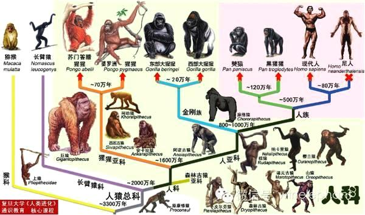
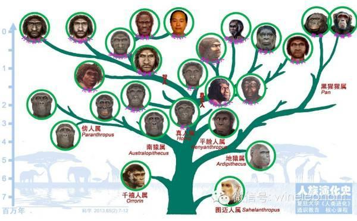
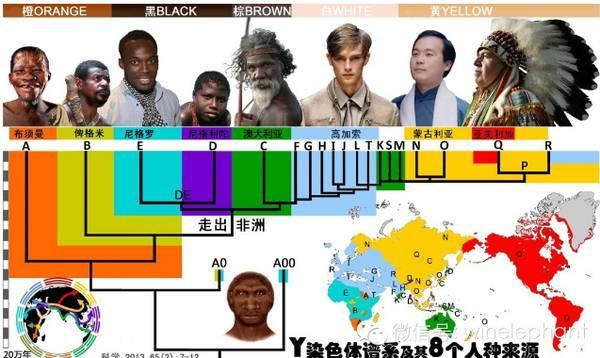
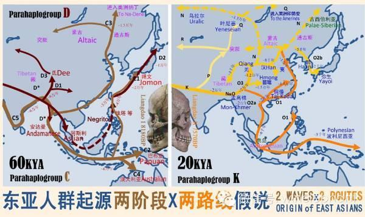
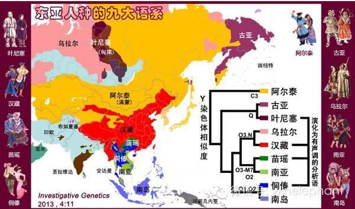
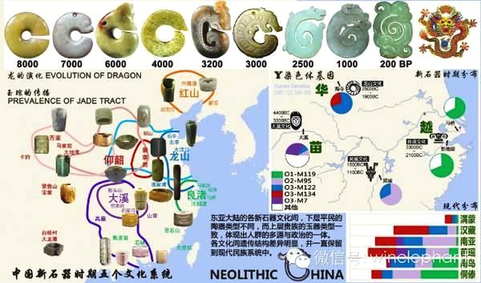
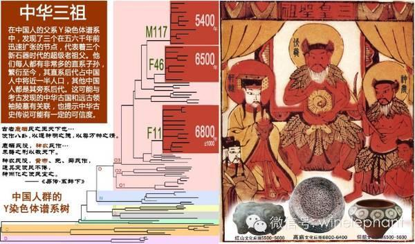

2014年是红山文化申遗年，是我们需要向全世界展示红山文化瑰宝的时候。但是大部分的红山文化出土瑰宝都在上世纪初流散海外，所幸玉石专家曾一士教授通过几十年的努力，把上千件海外遗珍红山玉器收集到一起。今天又把其中的精品带到了联合国来，向世界展示中国。我也有幸受邀，从中国人起源的角度，阐述红山文化玉石文物的重要价值。杨定一教授将从中国早期文化与宗教信仰层面来解析这批玉器。
人类从哪里来们现在有三种类型的材料来研究这个问题：基因、化石、语言文化。
语言文化能够追溯的时间有限，一般不能超过新石器时代。而根据化石相似度的比较构建人类进化谱系，也存在很大的主观判断的影响。很多形态特征并不与种系差异相关。比如，去年在Science发表的格鲁吉亚直立人的形态研究，五个同一地址同一地层发现的头骨，形态差异近于人属内的能人、匠人、直立人和早期智人之间的差别。这严重挑战了化石形态比较的可信度。而DNA遗传基因，有着极其庞大的信息量，我们每个人的基因组都有上万个碱基（密码单位），通过六次压缩，长度缩减上万倍，存储在人体的绝大多数细胞内。而人与人之间的DNA的差异，有着明确的界定，以及稳定的发生速率，可以准确地判定人与人之间的差距。
自古不同的文明有着不同的解释。毫无疑问，我们属于灵长类动物，与猕猴有着非常近的亲缘关系。当然，与我们人类亲缘关系最近的是黑猩猩属，包括黑猩猩和僰猿两种。其实，在生物学上有一个“人科”的概念，包括了黑猩猩属、大猩猩属、红猩猩属和我们真人属。人科动物都有着很高的智力。僰猿能达到10岁的人类儿童智力，黑猩猩能达到6岁，大猩猩和红猩猩能达到4岁。所以，“来自猩猩的你”并不是地球上唯一的智慧生物。通过基因组的比较，人科动物的演化谱系已经相当清晰。三千多万年前猴猿分野，两千万年前人科与小猿科分开，约1600万年前猩猩亚科与人亚科分化，约1000万年前金刚族（大猩猩）与人族分离，约500万年前人类祖先与黑猩猩祖先分道扬镳。各种化石人科动物都可以在这个进化树上找到位置（图1）

人科
中国境内也发现了很多人科动物化石，他们是中国人的祖先吗？
中国最早的一批人科动物是拉玛古猿、禄丰古猿等等，距今上千万年，但是他们显然是属于猩猩亚科的分支。三五米高的巨猿是另一种人科动物，一直生活到二三十万年前，他们也属于猩猩亚科，甚至与直立人共存过。所以这些都不是中国人的祖先。根据人类起源时期的冰川期的气候环境，东亚的森林更适合猩猩生活。非洲的草原才是人类的家园。人族产生于非洲，现在发现的八个属，图迈人属、千禧人属、地猿属、黑猩猩属、南猿属、傍人属、平脸人属、真人属，只有真人属的部分物种走出了非洲。这个人族的谱系给我们最深刻的印象是，虽然现在只有人类、黑猩猩和僰猿这三个物种，但是人类进化的历史上，很多时期都曾经数个物种共存，人类曾经并不孤单。例如大约两百万年前非洲的大湖区共同生活着鲍氏傍人、能人、匠人、卢道夫人。真人属是狭义的人类，可以分为四个类群：能人、匠人、直立人、智人。能人发生于大约210万年前，是人类的第一个阶段，树居人和卢道夫人是近似物种。大约190万年前，能人中演化出匠人。170多万年前，部分匠人来到亚洲，形成了直立人。中国境内，170万年前的元谋人、50万年前的北京人，都属于直立人范畴。120多万年前，非洲的匠人中又演化出智人，并数次从直布罗陀向欧亚大陆蔓延。人类适应世界各地的不同环境，演化出各种各样的形态特征，就身高而言，就出现了1.03米的印尼弗洛勒斯人和2.15米的南非海德堡人如此悬殊的差距。海德堡智人在非洲、欧亚西部、欧亚东部分别演化成罗得西亚人、尼安德特人和丹尼索瓦人。丹尼索瓦人在中国境内也有主要分布。20十万年前，非洲出现了现代人，并渐渐散播到全世界。这就是人类进化的大致历程（图2）。

人族
总体算来，中国大地上出现过三种人类：直立人、丹人、现代人。但是我们不能认为前两种人有基因流传给我们，因为二十多年的分子人类学研究成果彻底否定了这种可能。
二十多年来，分子人类学有四项最重大的成果。（1）现代人非洲起源。全世界任何两个人基因组之间的最大差异约20万年，而非洲以外的任何两个人之间最大差异不超过7万年，所以现代人应该是20万年前起源于非洲，不到七万年前走出非洲的。(2)尼人基因组与现代人基因组有约80万年差异。（3）丹人基因组与尼人基因组有约60万年差异，与现代人有80万年差异。（4）西班牙近40万年前的海德堡人线粒体基因组，处于丹人的祖先位置。这就彻底确定了智人分化过程的框架图。现代人起源于约20万年前的非洲，罗得西亚人是现代人唯一的祖先选项。罗人上溯到40-100万年前起源于海德堡人。部分海德堡人约80万年前来到西班牙，分散到欧亚大陆。约60万年前，部分海德堡人从北亚到了东亚。大约30万年前东西方分别演化成丹人和尼人。通过全基因组比较，发现各种智人之间有交流。非洲现代人中有零星的罗人基因。非洲之外的现代人中都有约2%的尼人基因，来自近7万年前的一次基因交流。而只有新几内亚、澳大利亚和美拉尼西亚的土著中有大约7%的丹人基因。
研究人群之间的演化关系，最实用的遗传材料是Y染色体。因为Y染色体是纯父系遗传的，它是父传子、子传孙，世代相传的家族标记。家族祖先的Y染色体特征会一直保留在直系男性后代中。所以我们利用Y染色体分型技术，成功地跨越1800多年，把曹操的爷爷和今天的九家曹操后人联系在一起。后代除了继承祖先得Y染色体标记，也会随着世代传递不断增加新的标记，使得后人的Y染色体类型越分越多。目前，我们把全世界现代人的Y染色体分成了20大类，编号A-T（图3）。

人种Y系
每一大类内部还有成百上千亚型，如果分析彻底，每个男人都可以在这棵进化树上找到自己唯一的分支。这些大类由于地理分布差异很大，可能起源于不同的地理类群。根据地理分布，把这棵树投射到地图上，就可以观察到现代人起源于东非并渐渐扩散到世界各地的过程。
中国所在的东亚地区，最多的Y染色体类型是O、N、C、D，还有少量的Q、R、J等等。计算各种类型（单倍群）在东亚的遗传年龄，可以明显分出三个遗传地层。C和D在东亚已经有了4-6万年，东亚主流的O和N在东亚不会超过2万年，而其他稀少类型大多只有数千年历史。地理分布上也有明显差异，C型沿海分布，观察早期沿海的考古遗址（贝丘）人骨遗骸，形态非常接近澳大利亚土著（图4）。

东亚2X2
D型分布青藏高原、日本、东南亚，东南亚和康藏的早期人骨接近尼格利陀人的形态。O型和N型在东亚人群中是最多的类型，分别约占60%和10%，O型东亚和东南亚最多，而N型在北亚达到高频。Q型也是北亚的类型。O、N、Q是真正的东亚人种类型。R型、J型等来自西方，是历史上西方人群渐渐东迁，从中国西北进入的类型。从基因组比例上计算，东西方基因的地理中位线位于哈萨克斯坦中部。中国各个区域自古都是东方成分占多数，即便在青铜时代的新疆各考古文化中看到了很多面貌接近西方人的遗骸，他们的基因检测也发现更多的东方成分。这些人群在东亚地区迁徙、融合、发展，形成了南岛、侗傣、南亚、苗瑶、汉藏、乌拉尔、叶尼塞、古亚和阿尔泰这九个语言文化类群（图5）。

语系
从Y染色体类型相似度看来，南岛和侗傣、南亚和苗瑶、汉藏和乌拉尔、叶尼塞和古亚都成对地体现出明显的近缘关系。从语言学上分析，侗傣、苗瑶、汉藏、叶尼塞(匈羯)都是两三千年前演化出了有声调的分析语，而与其近缘语系产生了明显差别。而这些演化过程，可能都是在中华文明圈的影响下发生的。
西方很多学者认为根据青铜器这一条标准，中华文明只能追溯到三千多年前的商代。中国很多学者对此也无奈接受。但是我认为以西方文明的物质产物作为标准来评判东方文明显然是不科学的。西方文明的四项标准：城市、文字、青铜、神庙和祭坛，除了文字，多是具体的物质。而文明，应该是社会文化的升华，更多是精神文明层面的。物质是精神的产物。所以我认为东方文明形成的标准应该调整为：国家政府（帝王）、文书记录（图文徽章）、礼仪规范（礼制玉器）、历法或法规。这或许是更好地适应世界各地的文明形成标准。作为中华文明的徽章象征，龙是当仁不让的。而龙的造型，可以追溯到新石器时代东北的红山文化中，很可能是8000多年前最早的玉玦造型演变而来的。中国的国家最早什么时候形成的？我们发现，在新石器时代的东亚大陆地区，虽然有着红山、龙山、仰韶、大溪、良渚这五种文化区系，但是文化区系的差异更多地体现在平民使用的陶器上，而上层贵族使用的玉器都非常相似。最重要的礼器之一，玉琮，从东北到西南都有发现（图6）。

文明
这可能说明，新石器时代的中国，虽然平民有着不同的遗传和文化传统，上层建筑可能是同一套。
那么中国的帝王最早什么时候出现的？
这在中国人的遗传谱系上发现了证据。我们发现中国人群，特别是汉族人群来自迅速的人口扩张，这从新石器时代中期就开始了。用Y染色体构建的中国父系遗传谱上，我们发现了三个独特的新石器时代个体节点，发生了突然的后代人口扩张。也就是说，有三个人，分别有特别多的儿子，他们的儿子又有特别多的孙子，两三代内就迅速繁衍出了成千上万后代。今天，近半数的中国男人都是这三个人的直系后代。根据积累的突变计算出这三个个体的年代，分别是大约6800、6500和5400年前（图7）。

三皇
如果不是帝王级别，如何能有这么多的子嗣？有趣的是，这三个年代正好分别对应考古文化中高庙文化、仰韶文化和红山文化鼎盛期的开始时间。
这三个帝王是谁？需要考古遗址中去寻找答案。在这些年代中出土了数个高规格墓葬。最著名的是仰韶文化西水坡大墓，距今 6400多年。其中遗骸的四周摆满蚌塑，东面是龙，西面是虎，北面是北斗，南面摆了一排动物，起头的是驼鹿和山羊，后面还有蛇蜥等动物，很有可能是二十八宿中的南方七宿（井木犴、鬼金羊、柳土獐、星日马、张月鹿、翼火蛇、轸水蚓）。对星象的详细描述，说明当时中国地区的人们人有丰富的天文知识，这可以用来制定历法。这位如此高调的墓主是谁，或许检测其基因组以后，可以在中国人的遗传谱系上找到他的位置。红山文化牛河梁最大的陵墓，是一个金字塔形建筑，距今5300多年。墓主佩戴的玉器极其精美、无出其右。他的身份也有待于基因组检测来解答。说到这里，红山文化及其玉器的重要性，就不言而喻了。因此，中国古史传说中的三皇五帝时代，或许都是真的。
我们确实到了走出疑古时代的关口。在传说中的五帝时代，据近四千多年前，中国各地出现了多个城池。八角星的徽章出现在各个文化区的重要器物上。陶寺遗址发现了制定太阳历二十四节气的天文台。各地的玉制礼器越来越规范。这一切都说明，中华文明已经完全成形了。
所以，我们重新审视文明的定义，我认为应该这样阐述：文明是一种让不同的人群和谐生活于同一个国度中的伦理和科学规范。而中华文明，从八千多年前开始萌发，在五六千年前已经有了最初的古国，三四千年前完全成熟。中华文明古国之悠久，完全不输于西方的文明古国。为了研究中华古史，我们必须从分子人类学、考古学和语言文化等多个角度综合分析。任何一个学科单方面的研究都只能得到片面的结果，犹如盲人摸象。只有多学科综合研究，我们才可能看到一个多维的立体的更真实的历史。
Hui Li, Ph.D., Professor, Ph.D. Student Supervisor,
MOE Key Laboratory of Contemporary ANthropology,
School of Life Sciences, Fudan University, Shanghai 200433 China
李辉教 授博士生导师
复旦大学 生命科学学院 现代人类学教育部重点实验室